llm-context · visual guide
Page 5 of 7
Concept 05
Following exact relationships within a fixed budget

Similarity chooses roots; exact facts create paths

Fitting the evidence packet
← Qualification
Next · Serving →